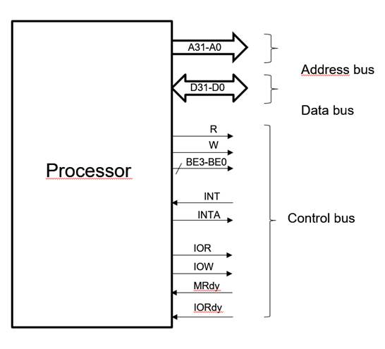
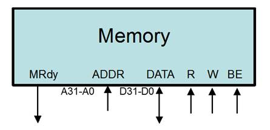
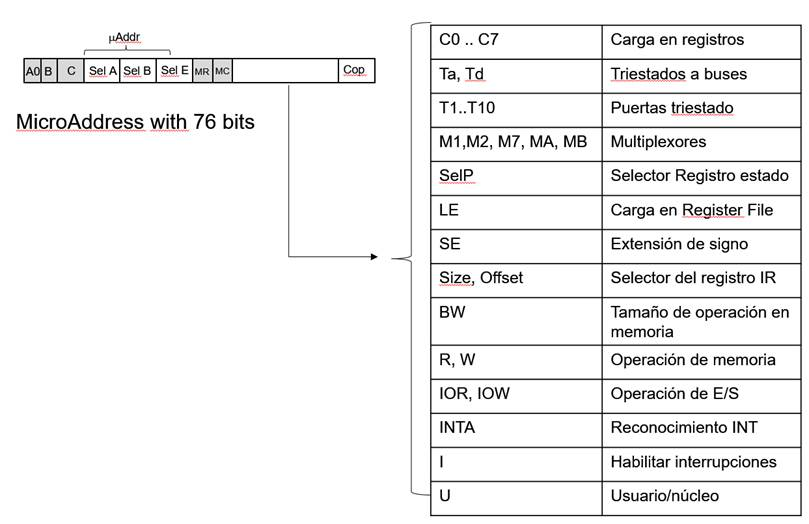
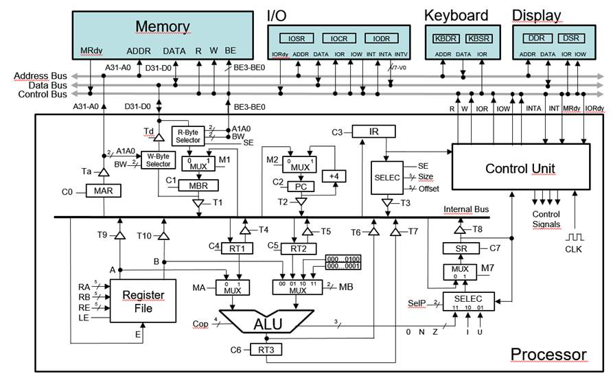
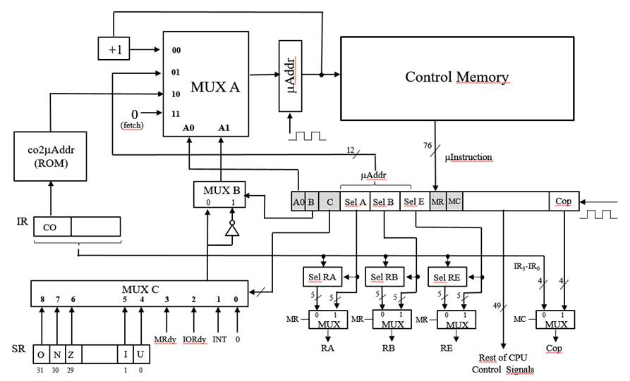
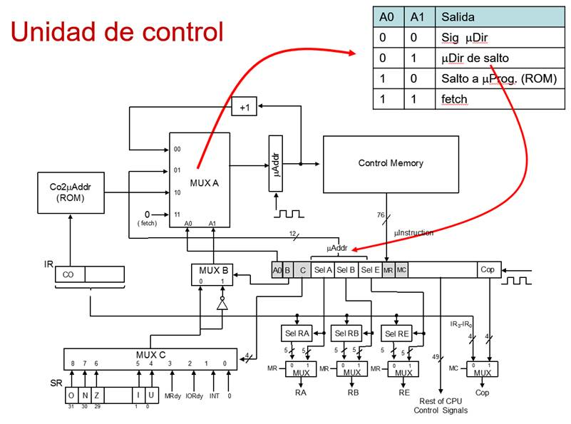
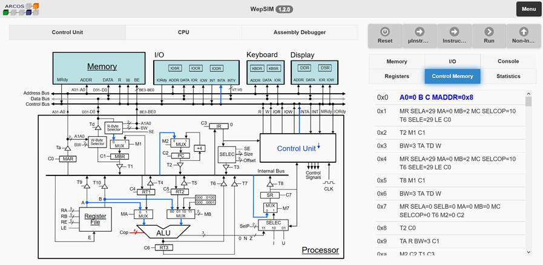
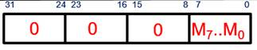
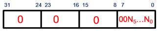
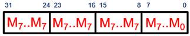

El sistema completo simulado (véase la Figura 1) incluye además del procesador, una memoria de 1 MB (direccionada por bytes), un teclado, una pantalla y un dispositivo de entrada y salida capaz de generar interrupciones.

Figura 1 Sistema Completo
El procesador (véase la Figura 2) es de 32 bits, trabaja con hasta 64 instrucciones definibles por el usuario (estilo MIPS, ARM, etc.), dispone de un banco de registros de 32 registros y usa un mapa de E/S separado.

Figura 2 Procesador WepSIM
El procesador utiliza direcciones de 32 bits, usando el bus de direcciones (Address Bus) para direcciones y el bus de datos (Data Bus) para enviar/recibir los datos a/desde memoria.
El procesador espera un ciclo para que la memoria realice la operación de lectura (activada con la señal R) o bien la operación de escritura (activada con la señal W).
La memoria usa una configuración Little-Endian tal y como se muestra en Figura 3.

Figura 3 Ordenación de bytes en memoria
Por tanto el byte menos significativo está en la dirección más baja de memoria.
El acceso a la memoria se realiza a nivel de byte.
Para la selección del byte se precisa indicar por un lado la dirección de la palabra donde se encuentra (A31...A200), y por otro lado el byte dentro de esa palabra al que se desea acceder (BE3...BE0).

Figura 4 Módulo de memoria
La Figura 4 muestra estas entradas/salidas comentadas, a las que hay que unir las señales R y W para la petición de lectura y escritura respectivamente.
Organización interna: señales de control
La unidad de control en WepSIM es microprogramable. Su memoria de control consta de 4096 micropalabras de 76 bits cada una (véase Figura 5).

Figura 5 Formato de microinstrucción
La nomenclatura general usada para el nombre las señales de control es la siguiente:
� Cx: señal de carga de registro x
� Tx: señal de activación triestado x
� Ry: identificador de registro para el punto de salida de valor y
� Mx: selección en multiplexor x
Adicionalmente la señal LE indica la escritura en el banco de registros, Cop indica la operación a realizar en la ALU, SelP selecciona qué bits actualizar en el registro de estado (SR), A1A0 son los dos bits menos significativos de una dirección de memoria y BW permite especificar el tamaño del dato al que se accede en memoria: una palabra completa, media palabra o un byte.
El procesador (véase la figura Figura 6) puede considerarse dividido en 7 partes: acceso a memoria (MAR, MBR, etc.), gestión del registro contador de programa (PC, etc.), gestión del registro de instrucción (IR, etc.), unidad de control (Control Unit), banco de registros (Register File), ALU y gestión del registro de estado (SR, etc.).

Figura 6 Detalle del procesador
La unidad de control (véase la figura Figura 7) a su vez está dividida en 5 partes: el control de la siguiente microdirección (MUX A, etc.), la transformación del
código de operación a la microdirección correspondiente (co2uAddr), el control de la condición de selección de microdirección (MUX B, MUX C, etc.), la memoria de control junto con el registro
de microinstrucción y por último los selectores de RA, RB, RE y Cop.

Figura 7 Detalle de la unidad de control
Para direccionar la memoria de control se precisa direcciones de 12 bits usándose secuenciamiento implícito. Es posible indicar como microdirección de memoria de control (véase Figura 8) la siguiente posición, usar parte de la microinstrucción, usar la salida de una ROM con la microdirección de comienzo asociada a un código de operación o bien la microdirección cero (0) a partir de la cual comienza el fetch.

Figura 8 Opciones para el MUX A
El ciclo de trabajo supone (normalmente) los siguientes pasos:
- Cargar un firmware de trabajo.
- Cargar un programa en ensamblador que use el firmware de trabajo.
- Ir a la pantalla principal (simulador) para ejecutar el programa en ensamblador que use el firmware de trabajo.
Estando en la pantalla principal es posible visualizar:
-
El contenido de la memoria de control (véase la Figura 24), con las señales que están asociadas a cada ciclo. Para ello ha de pulsar el botón "Control Memory" en
la barra de botones situada en la parte superior derecha de la pantalla principal.
Se destaca las señales que en el presente ciclo de reloj están activadas en azul con letra algo más grande.
Se dispone de una barra de desplazamiento para poder inspeccionar todo el contenido de la memoria de control. - El contenido de la memoria principal (véase la Figura 25), con las instrucciones en ensamblador a ejecutar. Para estas, es posible establecer un punto de ruptura haciendo clic en la columna breakpoints. Al establecer un punto de ruptura aparecerá un icono en dicha columna.

Figura 24 Pantalla principal: visualización de la memoria de control

Figura 25 Pantalla principal: visualización del código en la memoria principal
Estando en la pantalla principal es posible ejecutar:
� Microinstrucción a microinstrucción pulsando el botón "킝nstrucción" (véase la Figura 26), de forma que se pasará al siguiente ciclo de reloj y se generarán las señales de control asociadas.
� Instrucción a instrucción pulsando el botón "Instrucción" (véase la Figura 26) de forma que se generarán todos los ciclos de reloj asociados al microprograma de la instrucción, parando al principio del fetch.

Figura 26 Pantalla principal: opciones para la ejecución
Dando al botón "Registers" en la barra de botones situada en la parte superior derecha de la pantalla principal (véase la Figura 26) es posible ver cómo
los valores de los registros son modificados durante la ejecución.
Es posible visualizar también la unidad de control como se muestra en la Figura 27.

Figura 27 Pantalla principal: visualización de la unidad de control
Así como también es posible reiniciar la ejecución haciendo clic al botón "Reset" situado en la barra de botones que aparece en la parte superior de la pantalla.